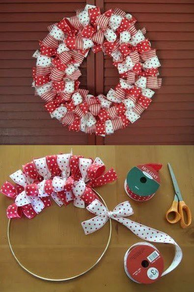

ARTESANATO
Artesanato de Natal: Guirlanda de laços
Que a guirlanda é item indispensável na decoração de Natal, isso todo mundo já sabe. Mas você sabia que é possível fazer uma guirlanda usando apenas laços de fita? Pois é, a nossa dica nº 3 prova que, com materiais simples, que a gente costuma ter em casa, dá para criar um lindo enfeite para porta.
Materiais Necessários
- Aro para bordar, bastidor ou base circular de arame
- Tesoura
- Fitas em duas estampas de sua preferência
Passo a Passo
Passo 1 – Faça os laços diretamente no aro, depois corte a sobra de fita com a tesoura. Complete todo o espaço com os laços de fita.
Dica 1: Para um visual mais interessante, intercale as cores das fitas.
Dica 2: Se achar melhor, faça todos os laços e depois cole-os com cola quente.
Dica 3: Se não tiver o aro, você pode fazer uma base de papelão. Nesse caso os laços devem ser colados.
Viu como é fácil? Faça a sua hoje mesmo!
